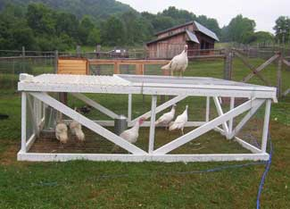

HILARY CHESTER/ALWAYS SOMETHIN' FARM
At first glance, these turkeys may look like broad-breasted white turkeys, but they’re smaller — even when mature. And a recent test proves their flavor is better.